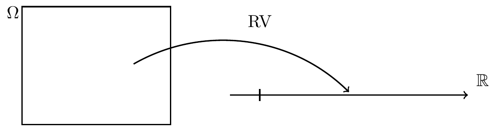
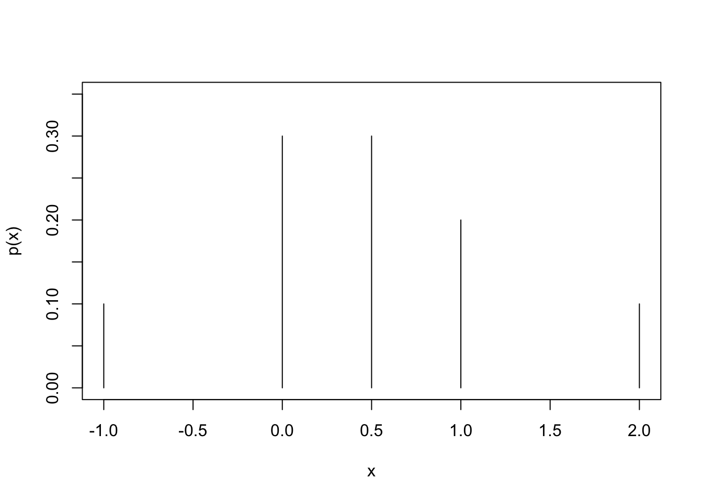
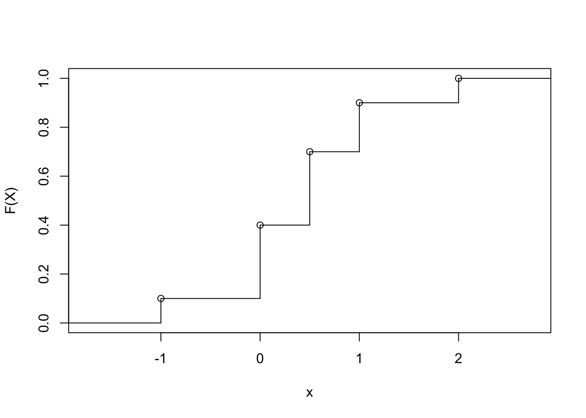

Chapter 4 Random Variables
4.1 Basic definitions
Statistical models often describe the experimental outcome in terms of probability statements.
In particular, a random variable is defined along with a distribution which might depend on a parameter.
For example, let random variable \(X\) record the number of Heads when a coin is tossed.
Then, \(X=1\) corresponds to Heads, with probability \(p\), and \(X=0\) to Tails, with probability \(1-p\).
In this example, \(p\) is the parameter of the
model, which might be unknown.
Tossing the coin many times and observing the outcomes
would give us a better idea of the value of \(p\).
Hence, to learn about parameter values, we need to collect data.
Then, taken together, our model and estimated parameter value give us an approximation to reality which can then be used to describe the current situation and to make predictions about the future.
Formally, a random variable is “a function which maps elements of the sample space onto the set of real numbers”. Informally, it is a numerical value which summarizes a random experiment by measuring some property of interest.

It is common to use the letters \(X, Y, Z\) to denote random variables. The set of all possible values which can be taken by the random variable is called the range space.
A discrete random variable \(X\), say, has a finite, or countably infinite, range space which is denoted \(\Omega_X =\{x_1, x_2,\ldots \}\) and the corresponding probabilities are written as \[ Pr( \{X=x_i\}) = p_X(x_i) =p_i \qquad i=1,2,\ldots \]
The possible values and corresponding probabilities is called the probability mass function (pmf) and is often shown in a table.
Note that the probability mass function must satisfy the Axioms of Probability, hence
\[
0\le p_X(x_i)\le 1 \qquad \mbox{for all $x_i\in \Omega_X$}
\]
and
\[\displaystyle \sum_{x_i\in \Omega_X} p_X(x_i)=1\]
where the sum is over all elements of the range space.
| \(x\) | \(-1\) | \(0\) | \(0.5\) | \(1\) | \(2\) |
|---|---|---|---|---|---|
| \(p_X(x)\) | \(0.1\) | \(0.3\) | \(0.3\) | \(0.2\) | \(0.1\) |

The graph is produced in R using the command plot with an option type = "h".
The cumulative distribution function (cdf) is defined as \[ F_X(x) = Pr( \{X\le x\}) = \sum _{x_i\le x} Pr(\{X=x_i\}). \] Note that this function is defined for all real numbers, and not just at the possible values. This means that for discrete random variable the cdf is a step function.
Example 4.1 cont. Consider the earlier probability mass function, which gives the following cumulative distribution function.
\[ F_X(x) = \begin{cases} 0.0 & x< - 1 \\ 0.1 & -1\le x < 0 \\ 0.4 & 0 \le x < 0.5 \\ 0.7 & 0.5\le x <1 \\ 0.9 & 1\le x <2 \\ 1.0 & 2\le x \end{cases} \]

The graph is produced in R using the commands cumsum, stepfun, and plot.
4.2 Expected value and variance
Definition: The expectation, or expected value, of random variable \(X\) is defined as \[ E[X] = \sum_{i = 1}^N x_i \; p_X(x_i). \] This is a weighted average of the possible values. The quantity \(E[X]\) is also called the “mean of \(X\)” and is sometimes denoted using the symbol \(\mu\) (say “mu”).
Example 4.1 cont. Consider again the above random variable, then the expectation can be evaluated as \[ E[X] = (-1)\times 0.1 + 0 \times 0.3 + 0.5\times 0.3 +1\times 0.2 + 2\times 0.1 = 0.45. \]
Note that, although we call it the expected value, in fact for many random variables, such as the one above, the actual expected value can never occur. Instead we should think of it as the long-term average.
Example 4.2 Suppose we roll an eight-sided die with sides labelled 1 to 8, where the even values are twice as likely as the odd numbers.
Let \(Y\) represent the outcome with probability mass function
| \(Y\) | \(1\) | \(2\) | \(3\) | \(4\) | \(5\) | \(6\) | \(7\) | \(8\) |
|---|---|---|---|---|---|---|---|---|
| \(p_Y(y)\) | \(\frac{1}{12}\) | \(\frac16\) | \(\frac{1}{12}\) | \(\frac16\) | \(\frac{1}{12}\) | \(\frac16\) | \(\frac{1}{12}\) | \(\frac16\) |
Properties of expectation:
(E1) The expectation of a constant is the constant itself, if \(c\) is a constant then \(E[c]=c\).
(E2) Expectation is a linear operator, that is if both \(a\) and \(b\) are constants, then \[ E[aX+b] = aE[X]+b. \] A simple case of this is when \(Y= 3-2X\), and then \(E[Y] = E[3-2X] = 3-2 E[X]\).
Proof: To see this let \(Y=aX+b\), and then note that \(\{Y=y_i\}\) where \(y_i=ax_i+b\) and \(\{X=x_i\}\) are equivalent events and hence \(p_y(y_i)=p_X(x_i)\). Then \[\begin{align*} E[Y] & = \sum y_i p_Y(y_i) = \sum (ax_i +b)p_X(x_i)\\ &= a \sum x_i p_X(x_i) + b\sum p_X(x_i) = a E[X]+b \end{align*}\] where the last step uses the definition of the expectation of \(X\) and the second Axiom.
(E3) Consider a collection of random variables \(X_1, X_2,\ldots, X_n\) and constants \(c_1, c_2,\ldots, c_n\). Let \(Y=\sum_{j=1}^n c_j X_j\), that is \(Y\) is a linear combination of the \(X_j\), then \[ E[Y] = \sum_{j=1}^n c_j E[X_j]. \] A simple case of this is when \(Y=X_1-2X_2\), and then \(E[Y] = E[X_1-2X_2] = E[X_1]-2 E[X_2]\). Again, we see the linear properties of expectation.
Example 4.3 In October the average monthly rainfall in Leeds is 2.3 inches with average minimum daily temperature of 11\(^oC\) and average maximum daily temperature of 18\(^oC\).
Suppose we want these in cm (\(1\) inch equal \(2.5\)cm) and \(^oF\) (\({\tt T}_{F} = \frac95 \times {\tt T}_{C} + 32\)).
- The expected rainfall is \(2.3\times 2.54=5.84\)cm.
- The expected minimum temperature is \(\frac95\times 11+32=51.8^oF\).
- The expected maximum temperature is \(\frac95\times 18+32=64.4^oF\).
The law of the unconscious statistician
A simple and automatic approach uses the following theorem: if \(Y=g(X)\), then \[ E[g(X)] = \left\{ \begin{array}{ll} \sum g(x) p_X(x) & \mbox{if \(X\) is discrete},\\[5mm] \int g(x) f_X(x) &\mbox{if \(X\) is continuous.} \end{array} \right. \] We have already seen examples of this with \(E[X^2]\) and \(E[X(X-1)]\), but there are many others. For example, \(E[s^X]\) is known as the probability generating function and is particularly useful for deriving many theoretical results regarding discrete random variables.
Proof:
Starting with the definition of expectation of \(Y\), \[ E[g(X)] = E[Y] = \sum _y y p_Y(y) = \sum _y y \sum _{x:g(x)=y} p_x(x) = \sum _y \sum _{x:g(x)=y} y p_x(x) \] using \(p_Y(y) = \sum _{x:g(x)=y} p_x(x)\) and replacing \(y\) by the equivalent numerical value \(g(x)\) \[ E[g(X)] = \sum _y \sum _{x:g(x)=y} g(x)p_x(x) \] and noting that the double sum can be replaced by a single sum \[ E[g(X)] =\sum _x g(x) p_x(x).\]
Variance of a random variable
The mean (or expectation) gives a “typical” or “representative” value, \(E[X]=\mu\) for random variable \(X\), but it is also of interest to know about variation around the mean.
We might imagine looking at the expected value of deviations of the random variable from the mean, but this is useless, as \(E[X-\mu]=E[X]-\mu=0\), hence, instead, we consider the expected squared deviation.
Definition: The variance of random variable \(X\) is defined as \[ Var(X)= E[(X- E[X] )^2] \] and the (positive) square-root is called the standard deviation, \(SD(X)=\sqrt{Var(X)}\).
In practice we usually evaluate the variance using the equivalent expression \[ Var(X) = E[X^2] - \{E[X]\}^2. \]
Proof: Starting with the definition and then multiplying the square \[ Var(X) = E[(X-E[X])^2] = E[X^2-2XE[X]+E[X]^2] \] using the standard properties of expectation \[ Var(X) = E[X^2]-2E[X]E[X]+E[X]^2. \] Finally, collecting terms together, gives \[ Var(X) = E[X^2] - \{E[X]\}^2. \]
Example 4.1 cont.
Consider again the earlier random variable with \(E[X]=0.45\), then we need
\[
E[X^2] = (-1)^2\times 0.1 + 0^2 \times 0.3 + 0.5^2\times 0.3 +1^2\times 0.2 + 2^2\times 0.1 = 0.775
\]
giving
\[
Var(X) = E[X^2]-\{E[X]\}^2
= 0.775- \left\{0.45\right\}^2
= 0.5725.
\]
The first step can be easily calculated in R using
sum(xvals^2 * probs), with xvals and probs as before.
Properties of variance
(V1) The variance of a constant is zero, \(Var[c]=0\).
(V2) For constants \(a\) and \(b\), we have \[ Var[aX+b] = a^2 Var[X]. \]
Proof Recall, with \(Y=aX+b\), that \(E[Y]=aE[X]+b\), then \[\begin{align*} Var(Y) &= E[(Y-E[Y])^2] \\ &= E\left[\left(aX+b -aE[X]- b\}\right)^2\right] \\ &= E[(aX-aE[X])^2] = a^2 E[(X-E[X])^2] = a^2 Var(X). \end{align*}\]
(V3) For (independent) random variables \(X_1,\ldots , X_n\) and constants \(c_1,\ldots , c_n\), and with \(Y=\sum_{j=1}^n c_i X_i\), then \[ Var[Y] = \sum_{i=j}^n c_j^2 Var[X_j]. \]
Example 4.2 (cont.)
For the eight-sided die we found that \(E[X]=14/3\), and then
\[\begin{align*}
E[X^2] & = \sum x^2 p_X(x) \\
&= 1^2\hspace{-3pt}\times \hspace{-3pt} \frac{1}{12} +
2^2\hspace{-3pt}\times\hspace{-3pt} \frac{1}{6} +
3^2\hspace{-3pt}\times\hspace{-3pt} \frac{1}{12} +
4^2\hspace{-3pt}\times\hspace{-3pt} \frac{1}{6} +
5^2\hspace{-3pt}\times\hspace{-3pt} \frac{1}{12} +
6^2\hspace{-3pt}\times\hspace{-3pt} \frac{1}{6} +
7^2\hspace{-3pt}\times\hspace{-3pt} \frac{1}{12} +
8^2\hspace{-3pt}\times\hspace{-3pt} \frac{1}{6} =27
\end{align*}\]
giving
\[
Var(X) = E[X^2]-\{E[X]\}^2
= 27- \left\{\frac{14}{3}\right\}^2
=\frac{47}{9}.
\]
The first step can be easily calculated in R using
sum(x^2 * p), with x and p defined as before.}
Notes:
- Variance is unaffected by an additive shift in the random variable, but a multiplicative scaling has a quadratic effect – compare to the linear properties of expectation.
- In property (V3) above, we see that an additional condition of independence was included. Two (or more) random variable are said to be independent if the value of one tells us nothing about the value of the other. If the random variables relate to physically separate experiments then we can assume independence, but otherwise we cannot.
Example 4.2 cont. For the eight-sided dice example earlier we saw that \(E[X]=14/3\) and \(Var[X]=47/9\).
Consider \(Z=6-3X\) then \[ E[Z] =E[6-3X] = 6-3E[X] = 6-3\times \frac{14}{3} = -8 \] and \[ Var[Z] =Var[6-3X] = (-3)^2Var[X] = 9\times \frac{47}{9}= 47. \]
Now suppose that we also have a standard six-sided die which has \(E[Y]=7/2\) and \(Var[Y]= 35/12\) Then, the variance of the sum of the two dice is \[Var[X+Y] = Var[X]+Var[Y] = \frac{47}{9}+\frac{35}{12} = \frac{879}{108} = 8.14. \] Note that here, \(X\) and \(Y\) are physically independent and so using this result for independent random variables is valid.
Estimation of parameters using the expectation
Many models will contain unknown parameters and one aim of a statistical analysis is to use data to say something
about likely values of the parameter — this process is called estimation or inference.
One of the simplest cases is the unknown probability of Heads in a biased coin, but we will see many more examples later in the module.
The basic idea is to use the data, \(\underline{x} =(x_1, x_2,..., x_n)\), to make a “good guess” at the numerical value of the parameter.
Let the parameter be called \(\theta\) (say “theta”), then
an estimate, \(\hat \theta= \hat \theta (\underline{x})\) is a numeric value which is a function of the data — different datasets lead to different estimates.
The simplest approach to estimation is to choose the value of the parameter so that the theoretical mean is equal to the sample mean.
Example 4.4 Let random variable \(X\) represent the number of Heads when a coin is toss once with
\(Pr(\{X=1\})=p\) and
\(Pr(\{X=0\})=1-p\), and hence \(p\) is the unknown parameter.
Now, the expectation is given by
\(E[X]=1\times p+0\times(1-p) = p\).
Also, let \(\underline{x}=(x_1,\ldots, x_n)\) be a corresponding dataset obtained by tossing the coin \(n\) times, with \(\bar{x}\) being the sample mean. Hence, the estimate is simply given as \(\hat p = \bar x\).
Suppose a sequence of \(10\) tosses yields \(\underline{x}=(1,0,0,1,1,1,0,1,0,1)\), then \(\bar{x}=0.6\) hence \(\hat{p}=\bar{x}=0.6\).
R commands:x = c(1, 0, 0, 1, 1, 1, 0, 1, 0, 1) and then
phat = mean(x)
Mid-semester survey
Testing testing testing: